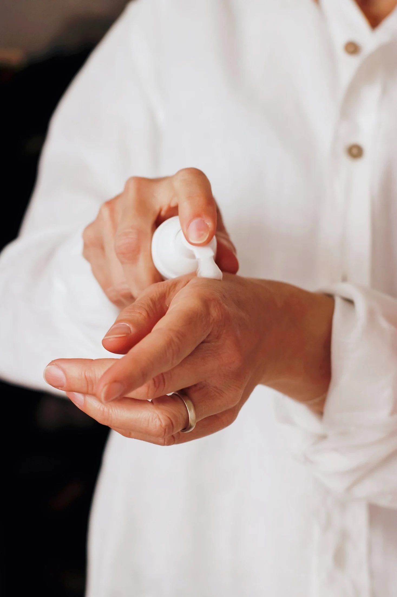

Hidratação é essencial
Durante o inverno, a umidade do ar baixa e as temperaturas mais frias levam à diminuição na transpiração corporal. Esses fatores fazem com que a pele fique mais seca.
Além disso, nesta época, é comum tomarmos banhos mais quentes e demorados, levando a uma remoção da oleosidade natural da pele. Isso leva ao ressecamento corporal, deixando a pele com aspecto esbranquiçado, coceiras, irritações e piora de doenças de pele, como as dermatites.
Para evitar tais sintomas é importante fazer hidratações corporais mais intensas e, além disso, investir em uma alimentação saudável, rica em vitaminas e antioxidantes, o que pode trazer benefícios em longo prazo
Cuidado com a pele - Alimente-se bem
Para prevenir o envelhecimento da pele durante o inverno, a alimentação deve ser balanceada com legumes, hortaliças e frutas ricas em vitamina C.
Frutas:
limão,
morango,
framboesa,
laranja,
mexerica,
cereja,
goiaba
Vegetais:
verduras verde-escuras,
brócolis,
repolho,
cenoura
São exemplos de alimentos que devem ser consumidos em maior quantidade principalmente no inverno, pois são ricos em antioxidantes.
O pepino também é uma ótima opção, pois é rico em nutrientes como a vitamina A, vitamina B1, biotina e magnésio que atuam na hidratação, fortalecimento, revitalização e firmeza da pele.
A soja é outro alimento que deve ser adicionado à dieta saudável. Ela é rica em isoflavonas – substâncias que evitam o ressecamento e melhoram a elasticidade da pele.
Dica da Dermato - Beba água
Beber água é importante não só para o cuidado com a pele, mas também para a preservação da saúde como um todo.
Durante o inverno, temos uma tendência a beber menos água do que o recomendado, e isso não é bom!!
Beba no mínimo 2 litros de água por dia. Se você tem mais dificuldade em tomar água durante o inverno, uma dica é ingerir chás naturais ou de frutas, fazer águas saborizadas com frutas, como morango ou limão, e consumir água de coco.
Corpo hidratado é sinônimo de pele macia e elástica.
Dicas para hidratar seu corpo no inverno
Hidratar a pele do corpo é tão importante e necessário quanto hidratar e cuidar da pele do rosto.
Comece a hidratação ainda no chuveiro - Mesmo não sendo exatamente um hidratante, você pode lavar o seu corpo com uma loção de limpeza / sabonetes que possuem ativos que ajudam na higiene e hidratação da pele
Hidrate o seu corpo logo após o banho - A melhor hora para aplicar o hidratante é depois do banho - neste momento a pele absorve melhor o produto e todos os seus nutrientes! Você pode optar por hidratantes com ceramidas e ácido hialurônico em sua formulação para ter um resultado ainda melhor.
Aplique o hidratante nas partes mais ressecadas - Todo mundo tem uma região do corpo que sofre mais com o ressecamento - no geral, costumam ser cotovelos, mãos, pés e joelhos. A pele dessas áreas possui poucas glândulas sebáceas, causando aquele aspecto áspero e seco. Neste caso, vale investir em um hidratante com textura mais densa.
Os hidrantes faciais jamais devem ser deixados de lado no inverno e devem usados não somente por aqueles que têm a pele seca, mas também por quem tem a pele oleosa, com a finalidade de prevenir a perda de água da pele, garantindo a hidratação e fortalecendo a barreira de proteção do local.
Não se esqueça dos lábios - A pele do lábio é fina e delicada, e o ressecamento causado pelas baixas temperaturas levam a rachaduras, ressecamentos e até fissuras. Para evitar esse problema, utilize um hidratante labial várias vezes ao dia, de preferência com ativos para a recuperação da pele, como pantenol e manteiga de karité.
Use Protetor solar - O protetor solar sempre dever ser usado, independente da estação do ano. Ele é fundamental nos cuidados com a pele e na prevenção do câncer de pele. Apesar de ser um período de baixas temperaturas e muitas nuvens no céu, isso não impede que os raios solares cheguem a sua pele. A radiação UVA, responsável pelo envelhecimento cutâneo, manchas e câncer de pele, continua atingindo nossa pele todos os dias, independente do clima e da estação do ano.
Procedimentos Dermatológicos no inverno:
O inverno é uma boa época para realizar alguns tratamentos dermatológicos que requerem que o paciente evite a exposição ao sol, como peelings, tratamentos a laser etc.
Aqui na MS Vida, trabalhamos com os principais procedimentos estéticos.
Agende sua consulta aqui